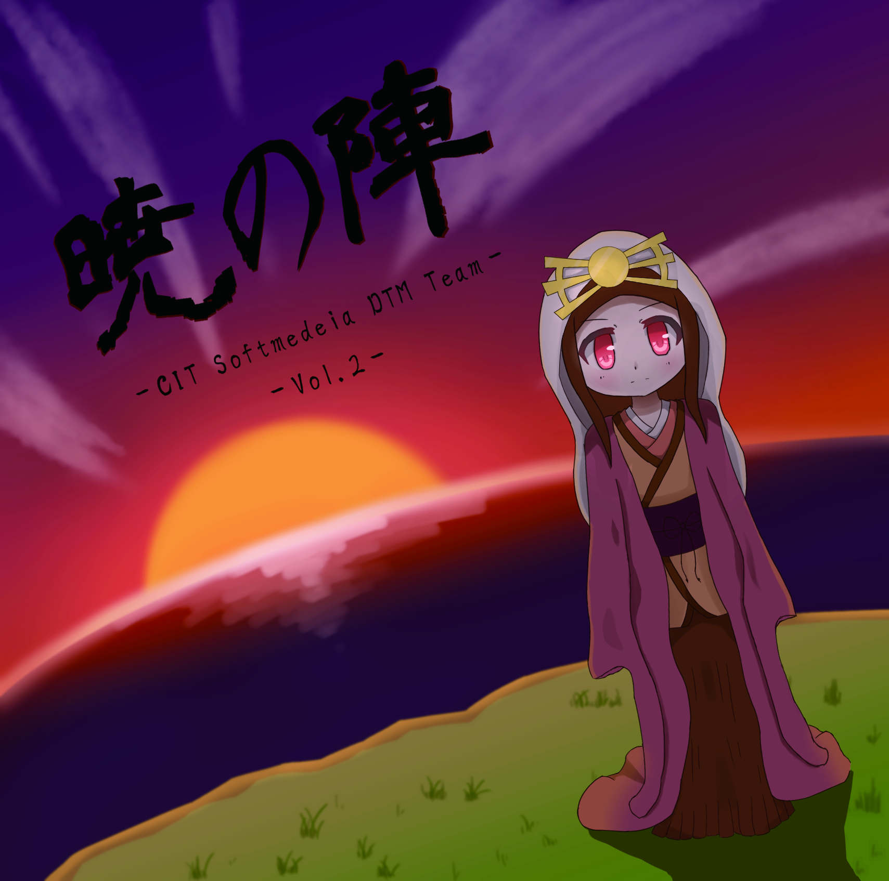

暁の陣
| Title | 暁の陣 |
| Date | M3 Spring 2019.4.28 (Sun.) |
| Place | 第二展示場 え-24a "CIT Softmedia DTM Team" |
| Price | ¥500 |
Album Information

暁の陣 Vol.1

暁の陣 Vol.2
暁の陣 Vol.1
| No | Title | Composer |
|---|---|---|
| 1 | riverside | Smile storm |
| 2 | Kai | ズークマ |
| 3 | Ipetam | pixel |
| 4 | えけのり囃子 | きょんさちまえけのり |
| 5 | YOur big moment!! | はるかぜ |
| 6 | 夜桜Slumber | タンクトップマスター |
| 7 | 未完の月歌 | never |
| 8 | 桜吹雪 | Jey* |
暁の陣 Vol.2
| No | Title | Composer |
|---|---|---|
| 1 | Lady of Buttfly | 綿菓子 |
| 2 | 朝焼け | SB |
| 3 | 新宿Tたいむ | らぎ |
| 4 | Atmosphere | いなむぎ |
| 5 | Trip to Chiba | saaa |
| 6 | wa | teru |
| 7 | 桜華響咲 | シルバー |
Credit
| Jacket Design | O2 |
| Jacket Design | くび |
| Jacket Design | レイヤ |
| Jacket Design | ジャムお兄さん |
| Mastering | teru |
| Web Design | SB |
| Web Design | teru |